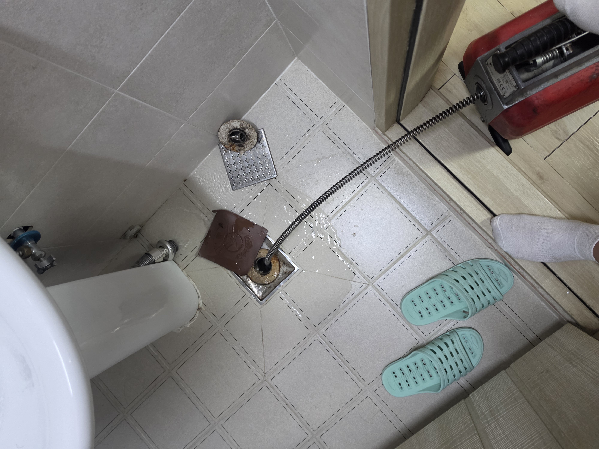
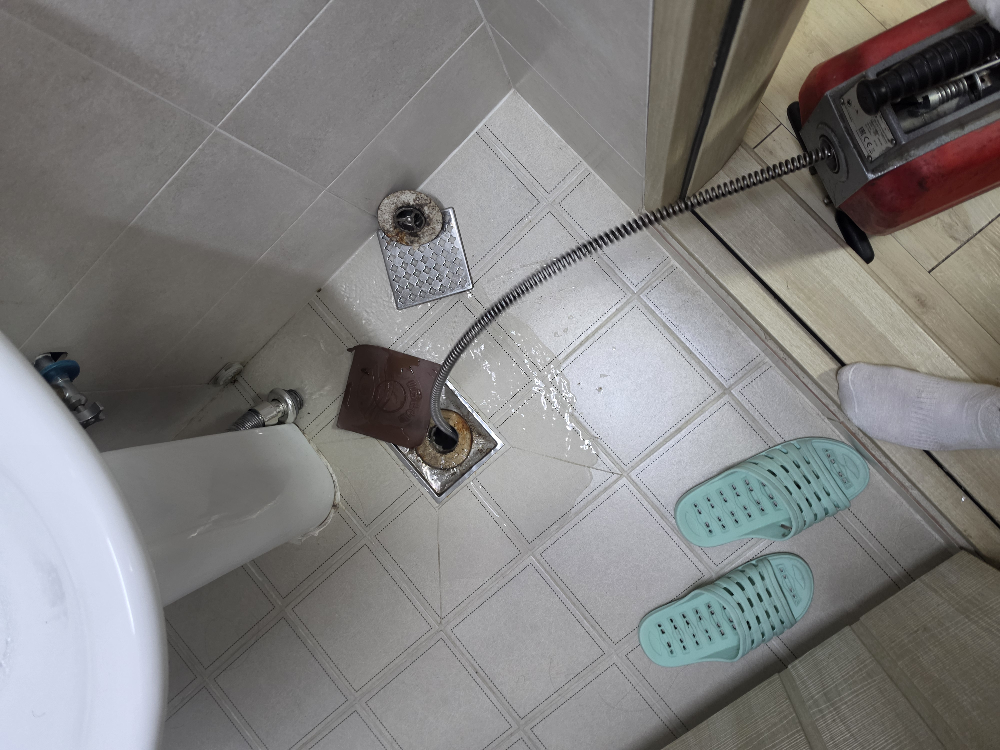
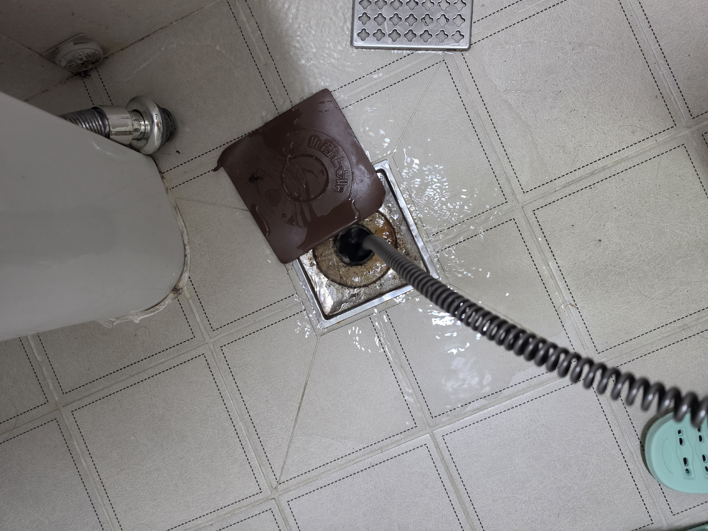
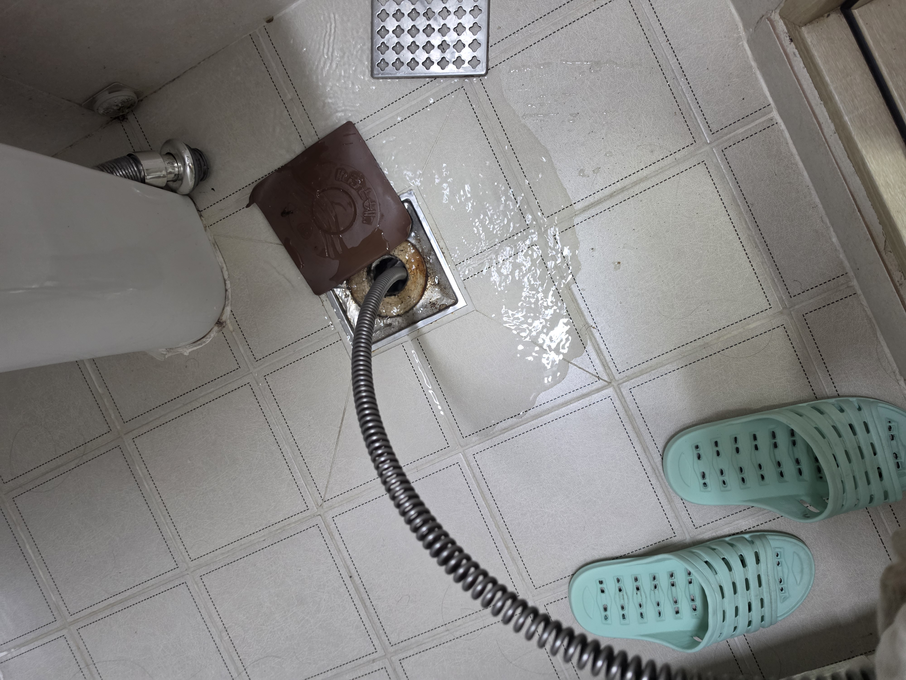
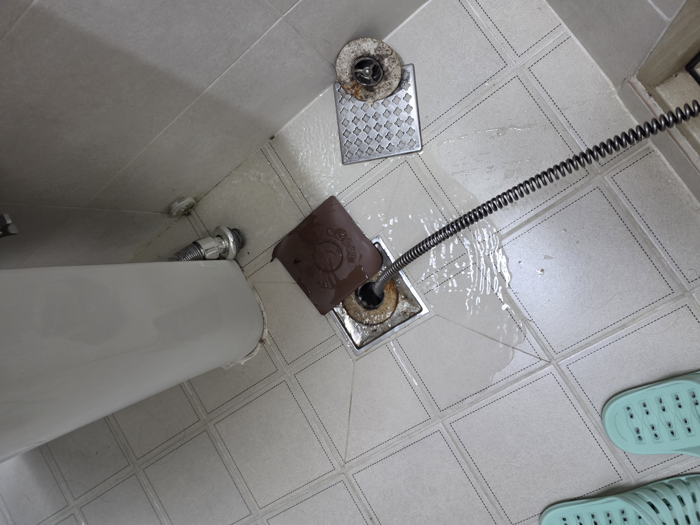
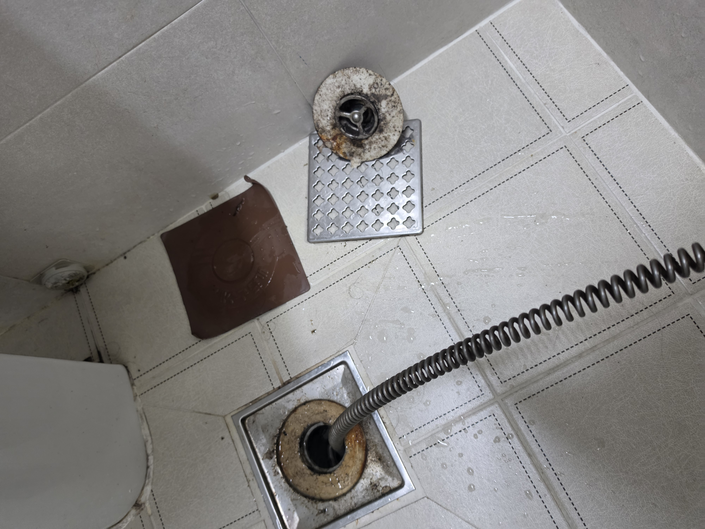
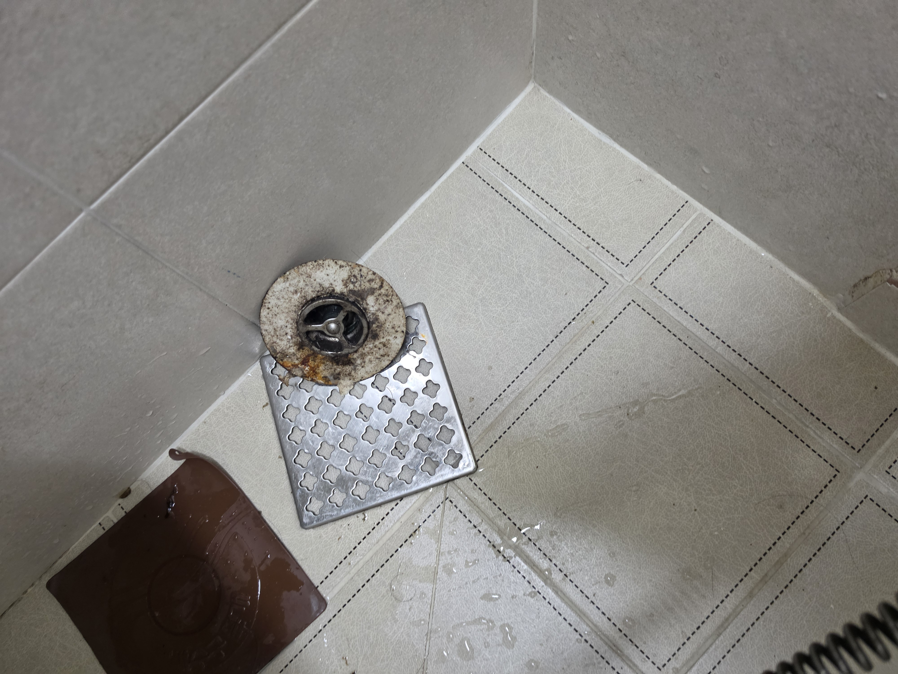
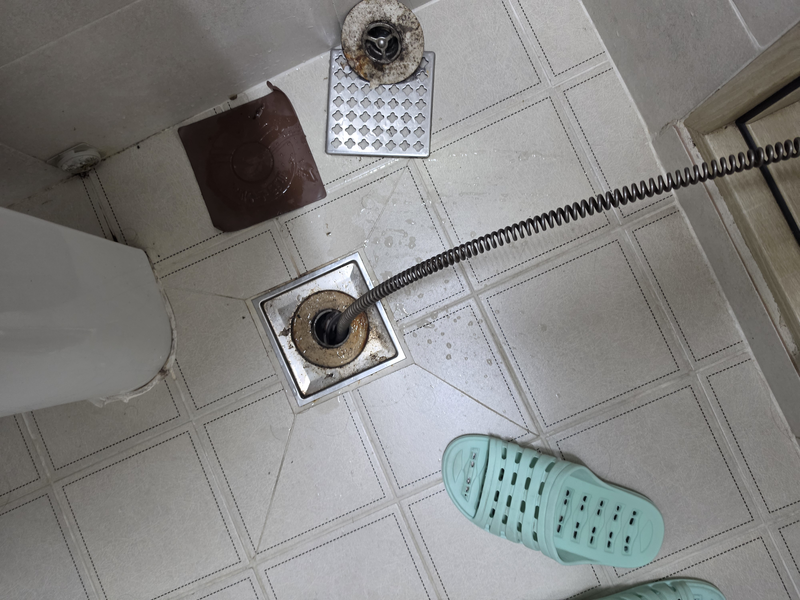
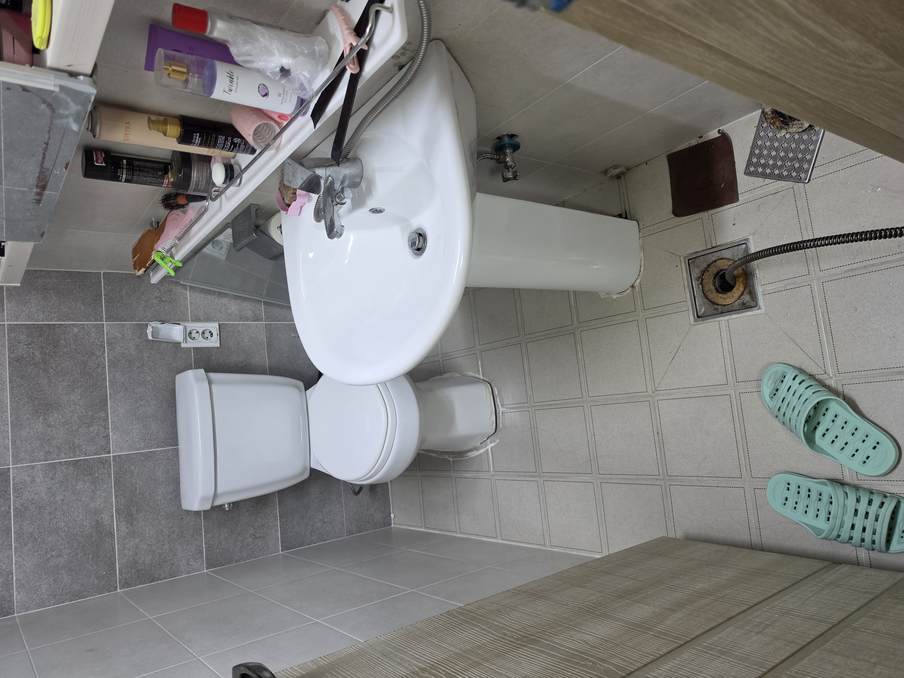

현장 상황
김포시 월곶면 군하리 스타빌에서 위층에서 물을 사용할 때 아래층 싱크대 쪽으로 물이 올라오는 역류 증상이 발생했습니다. 해당 건물은 싱크대 배관과 안방 욕실 배수구 쪽 배관이 연결된 구조로, 배관 연결 상태와 작업 위치를 확인한 뒤 작업을 진행했습니다.
01. 역류 증상 확인
위층에서 물을 사용할 때 아래층 싱크대 방향으로 물이 역류하는 상태를 확인했습니다.
02. 배관 연결 구조 확인
싱크대와 안방 욕실 배수구 쪽으로 연결된 배관 구조를 확인했습니다.
03. 스프링 장비 작업
안방 욕실 배수구에서 스프링 장비를 투입해 막힌 배관 구간을 작업했습니다.
월곶면 군하리 실제 작업사진













이 건물은 이전에도 배관 막힘이 반복된 경험이 있었기 때문에
기존 작업 경험과 배관 연결 구조를 함께 참고해
역류 증상과 관련된 작업 위치를 확인하며 진행했습니다.
월곶면 하수구·배관 상담
하수구막힘, 싱크대막힘, 배수구막힘, 변기막힘, 배관 고압세척, 누수탐지 및 배관공사 관련 상담이 필요하시면 현재 발생한 증상을 말씀해 주세요.
☎ 010-9991-2453 전화상담